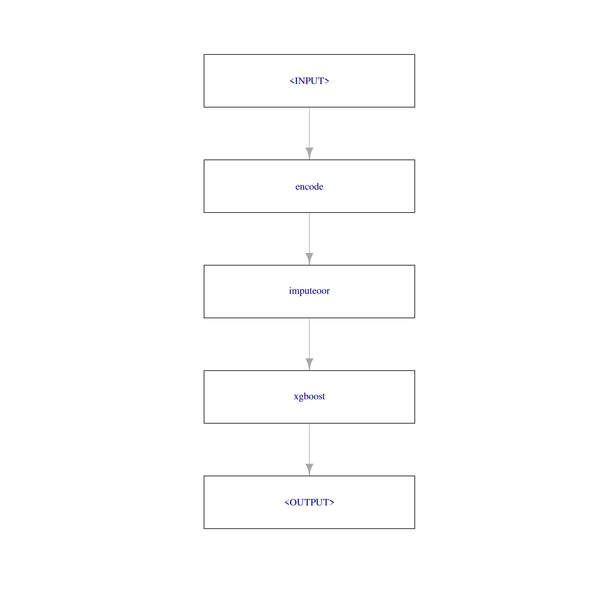
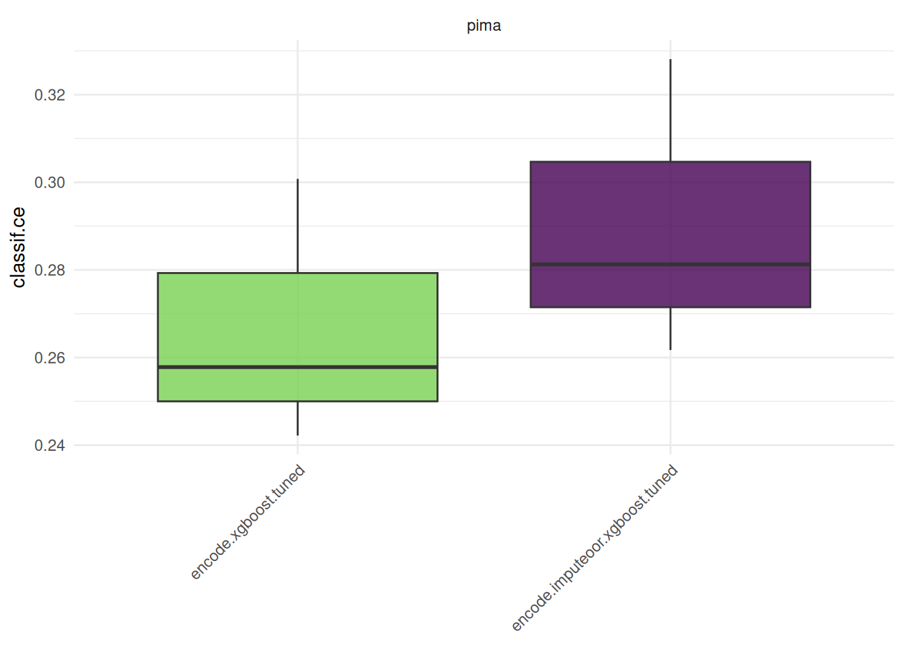

library(mlr3verse)Scope
This is the second part of the practical tuning series. The other parts can be found here:
- Part I - Tune a Support Vector Machine
- Part III - Build an Automated Machine Learning System
- Part IV - Tuning and Parallel Processing
In this post, we build a simple preprocessing pipeline and tune it. For this, we are using the mlr3pipelines extension package. First, we start by imputing missing values in the Pima Indians Diabetes data set. After that, we encode a factor column to numerical dummy columns in the data set. Next, we combine both preprocessing steps to a Graph and create a GraphLearner. Finally, nested resampling is used to compare the performance of two imputation methods.
Prerequisites
We load the mlr3verse package which pulls in the most important packages for this example.
We initialize the random number generator with a fixed seed for reproducibility, and decrease the verbosity of the logger to keep the output clearly represented. The lgr package is used for logging in all mlr3 packages. The mlr3 logger prints the logging messages from the base package, whereas the bbotk logger is responsible for logging messages from the optimization packages (e.g. mlr3tuning ).
set.seed(7832)
lgr::get_logger("mlr3")$set_threshold("warn")
lgr::get_logger("bbotk")$set_threshold("warn")In this example, we use the Pima Indians Diabetes data set which is used to predict whether or not a patient has diabetes. The patients are characterized by 8 numeric features of which some have missing values. We alter the data set by categorizing the feature pressure (blood pressure) into the categories "low", "mid", and "high".
# retrieve the task from mlr3
task = tsk("pima")
# create data frame with categorized pressure feature
data = task$data(cols = "pressure")
breaks = quantile(data$pressure, probs = c(0, 0.33, 0.66, 1), na.rm = TRUE)
data$pressure = cut(data$pressure, breaks, labels = c("low", "mid", "high"))
# overwrite the feature in the task
task$cbind(data)
# generate a quick textual overview
skimr::skim(task$data())| Name | task$data() |
| Number of rows | 768 |
| Number of columns | 9 |
| Key | NULL |
| _______________________ | |
| Column type frequency: | |
| factor | 2 |
| numeric | 7 |
| ________________________ | |
| Group variables | None |
Variable type: factor
| skim_variable | n_missing | complete_rate | ordered | n_unique | top_counts |
|---|---|---|---|---|---|
| diabetes | 0 | 1.00 | FALSE | 2 | neg: 500, pos: 268 |
| pressure | 36 | 0.95 | FALSE | 3 | low: 282, mid: 245, hig: 205 |
Variable type: numeric
| skim_variable | n_missing | complete_rate | mean | sd | p0 | p25 | p50 | p75 | p100 | hist |
|---|---|---|---|---|---|---|---|---|---|---|
| age | 0 | 1.00 | 33.24 | 11.76 | 21.00 | 24.00 | 29.00 | 41.00 | 81.00 | ▇▃▁▁▁ |
| glucose | 5 | 0.99 | 121.69 | 30.54 | 44.00 | 99.00 | 117.00 | 141.00 | 199.00 | ▁▇▇▃▂ |
| insulin | 374 | 0.51 | 155.55 | 118.78 | 14.00 | 76.25 | 125.00 | 190.00 | 846.00 | ▇▂▁▁▁ |
| mass | 11 | 0.99 | 32.46 | 6.92 | 18.20 | 27.50 | 32.30 | 36.60 | 67.10 | ▅▇▃▁▁ |
| pedigree | 0 | 1.00 | 0.47 | 0.33 | 0.08 | 0.24 | 0.37 | 0.63 | 2.42 | ▇▃▁▁▁ |
| pregnant | 0 | 1.00 | 3.85 | 3.37 | 0.00 | 1.00 | 3.00 | 6.00 | 17.00 | ▇▃▂▁▁ |
| triceps | 227 | 0.70 | 29.15 | 10.48 | 7.00 | 22.00 | 29.00 | 36.00 | 99.00 | ▆▇▁▁▁ |
We choose the xgboost algorithm from the xgboost package as learner.
learner = lrn("classif.xgboost", nrounds = 100, id = "xgboost", verbose = 0)Missing Values
The task has missing data in five columns.
round(task$missings() / task$nrow, 2)diabetes age glucose insulin mass pedigree pregnant pressure triceps
0.00 0.00 0.01 0.49 0.01 0.00 0.00 0.05 0.30 The xgboost learner has an internal method for handling missing data but some learners cannot handle missing values. We will try to beat the internal method in terms of predictive performance. The mlr3pipelines package offers various methods to impute missing values.
mlr_pipeops$keys("^impute")[1] "imputeconstant" "imputehist" "imputelearner" "imputemean" "imputemedian" "imputemode"
[7] "imputeoor" "imputesample" We choose the PipeOpImputeOOR that adds the new factor level ".MISSING". to factorial features and imputes numerical features by constant values shifted below the minimum (default) or above the maximum.
imputer = po("imputeoor")
print(imputer)PipeOp: <imputeoor> (not trained)
values: <min=TRUE, offset=1, multiplier=1>
Input channels <name [train type, predict type]>:
input [Task,Task]
Output channels <name [train type, predict type]>:
output [Task,Task]As the output suggests, the in- and output of this pipe operator is a Task for both the training and the predict step. We can manually train the pipe operator to check its functionality:
task_imputed = imputer$train(list(task))[[1]]
task_imputed$missings()diabetes age pedigree pregnant glucose insulin mass pressure triceps
0 0 0 0 0 0 0 0 0 Let’s compare an observation with missing values to the observation with imputed observation.
rbind(
task$data()[8,],
task_imputed$data()[8,]
) diabetes age glucose insulin mass pedigree pregnant pressure triceps
<fctr> <num> <num> <num> <num> <num> <num> <fctr> <num>
1: neg 29 115 NA 35.3 0.134 10 <NA> NA
2: neg 29 115 -819 35.3 0.134 10 .MISSING -86Note that OOR imputation is in particular useful for tree-based models, but should not be used for linear models or distance-based models.
Factor Encoding
The xgboost learner cannot handle categorical features. Therefore, we must to convert factor columns to numerical dummy columns. For this, we argument the xgboost learner with automatic factor encoding.
The PipeOpEncode encodes factor columns with one of six methods. In this example, we use one-hot encoding which creates a new binary column for each factor level.
factor_encoding = po("encode", method = "one-hot")We manually trigger the encoding on the task.
factor_encoding$train(list(task))$output
<TaskClassif:pima> (768 x 11): Pima Indian Diabetes
* Target: diabetes
* Properties: twoclass
* Features (10):
- dbl (10): age, glucose, insulin, mass, pedigree, pregnant, pressure.high, pressure.low, pressure.mid,
tricepsThe factor column pressure has been converted to the three binary columns "pressure.low", "pressure.mid", and "pressure.high".
Constructing the Pipeline
We created two preprocessing steps which could be used to create a new task with encoded factor variables and imputed missing values. However, if we do this before resampling, information from the test can leak into our training step which typically leads to overoptimistic performance measures. To avoid this, we add the preprocessing steps to the Learner itself, creating a GraphLearner. For this, we create a Graph first.
graph = po("encode") %>>%
po("imputeoor") %>>%
learner
plot(graph, html = FALSE)
We use as_learner() to wrap the Graph into a GraphLearner with which allows us to use the graph like a normal learner.
graph_learner = as_learner(graph)
# short learner id for printing
graph_learner$id = "graph_learner"The GraphLearner can be trained and used for making predictions. Instead of calling $train() or $predict() manually, we will directly use it for resampling. We choose a 3-fold cross-validation as the resampling strategy.
resampling = rsmp("cv", folds = 3)
rr = resample(task = task, learner = graph_learner, resampling = resampling)rr$score()[, c("iteration", "task_id", "learner_id", "resampling_id", "classif.ce"), with = FALSE] iteration task_id learner_id resampling_id classif.ce
<int> <char> <char> <char> <num>
1: 1 pima graph_learner cv 0.2851562
2: 2 pima graph_learner cv 0.2460938
3: 3 pima graph_learner cv 0.2968750For each resampling iteration, the following steps are performed:
- The task is subsetted to the training indices.
- The factor encoder replaces factor features with dummy columns in the training task.
- The OOR imputer determines values to impute from the training task and then replaces all missing values with learned imputation values.
- The learner is applied on the modified training task and the model is stored inside the learner.
Next is the predict step:
- The task is subsetted to the test indices.
- The factor encoder replaces all factor features with dummy columns in the test task.
- The OOR imputer replaces all missing values of the test task with the imputation values learned on the training set.
- The learner’s predict method is applied on the modified test task.
By following this procedure, it is guaranteed that no information can leak from the training step to the predict step.
Tuning the Pipeline
Let’s have a look at the parameter set of the GraphLearner. It consists of the xgboost hyperparameters, and additionally, the parameter of the PipeOp encode and imputeoor. All hyperparameters are prefixed with the id of the respective PipeOp or learner.
as.data.table(graph_learner$param_set)[, c("id", "class", "lower", "upper", "nlevels"), with = FALSE] id class lower upper nlevels
<char> <char> <num> <num> <num>
1: encode.method ParamFct NA NA 5
2: encode.affect_columns ParamUty NA NA Inf
3: imputeoor.min ParamLgl NA NA 2
4: imputeoor.offset ParamDbl 0 Inf Inf
5: imputeoor.multiplier ParamDbl 0 Inf Inf
6: imputeoor.affect_columns ParamUty NA NA Inf
7: xgboost.alpha ParamDbl 0 Inf Inf
8: xgboost.approxcontrib ParamLgl NA NA 2
9: xgboost.base_score ParamDbl -Inf Inf Inf
10: xgboost.booster ParamFct NA NA 3
11: xgboost.callbacks ParamUty NA NA Inf
12: xgboost.colsample_bylevel ParamDbl 0 1 Inf
13: xgboost.colsample_bynode ParamDbl 0 1 Inf
14: xgboost.colsample_bytree ParamDbl 0 1 Inf
15: xgboost.device ParamUty NA NA Inf
16: xgboost.disable_default_eval_metric ParamLgl NA NA 2
17: xgboost.early_stopping_rounds ParamInt 1 Inf Inf
18: xgboost.eta ParamDbl 0 1 Inf
19: xgboost.eval_metric ParamUty NA NA Inf
20: xgboost.feature_selector ParamFct NA NA 5
21: xgboost.feval ParamUty NA NA Inf
22: xgboost.gamma ParamDbl 0 Inf Inf
23: xgboost.grow_policy ParamFct NA NA 2
24: xgboost.interaction_constraints ParamUty NA NA Inf
25: xgboost.iterationrange ParamUty NA NA Inf
26: xgboost.lambda ParamDbl 0 Inf Inf
27: xgboost.lambda_bias ParamDbl 0 Inf Inf
28: xgboost.max_bin ParamInt 2 Inf Inf
29: xgboost.max_delta_step ParamDbl 0 Inf Inf
30: xgboost.max_depth ParamInt 0 Inf Inf
31: xgboost.max_leaves ParamInt 0 Inf Inf
32: xgboost.maximize ParamLgl NA NA 2
33: xgboost.min_child_weight ParamDbl 0 Inf Inf
34: xgboost.missing ParamDbl -Inf Inf Inf
35: xgboost.monotone_constraints ParamUty NA NA Inf
36: xgboost.nrounds ParamInt 1 Inf Inf
37: xgboost.normalize_type ParamFct NA NA 2
38: xgboost.nthread ParamInt 1 Inf Inf
39: xgboost.ntreelimit ParamInt 1 Inf Inf
40: xgboost.num_parallel_tree ParamInt 1 Inf Inf
41: xgboost.objective ParamUty NA NA Inf
42: xgboost.one_drop ParamLgl NA NA 2
43: xgboost.outputmargin ParamLgl NA NA 2
44: xgboost.predcontrib ParamLgl NA NA 2
45: xgboost.predinteraction ParamLgl NA NA 2
46: xgboost.predleaf ParamLgl NA NA 2
47: xgboost.print_every_n ParamInt 1 Inf Inf
48: xgboost.process_type ParamFct NA NA 2
49: xgboost.rate_drop ParamDbl 0 1 Inf
50: xgboost.refresh_leaf ParamLgl NA NA 2
51: xgboost.reshape ParamLgl NA NA 2
52: xgboost.seed_per_iteration ParamLgl NA NA 2
53: xgboost.sampling_method ParamFct NA NA 2
54: xgboost.sample_type ParamFct NA NA 2
55: xgboost.save_name ParamUty NA NA Inf
56: xgboost.save_period ParamInt 0 Inf Inf
57: xgboost.scale_pos_weight ParamDbl -Inf Inf Inf
58: xgboost.skip_drop ParamDbl 0 1 Inf
59: xgboost.strict_shape ParamLgl NA NA 2
60: xgboost.subsample ParamDbl 0 1 Inf
61: xgboost.top_k ParamInt 0 Inf Inf
62: xgboost.training ParamLgl NA NA 2
63: xgboost.tree_method ParamFct NA NA 5
64: xgboost.tweedie_variance_power ParamDbl 1 2 Inf
65: xgboost.updater ParamUty NA NA Inf
66: xgboost.verbose ParamInt 0 2 3
67: xgboost.watchlist ParamUty NA NA Inf
68: xgboost.xgb_model ParamUty NA NA Inf
id class lower upper nlevelsWe will tune the encode method.
graph_learner$param_set$values$encode.method = to_tune(c("one-hot", "treatment"))We define a tuning instance and use grid search since we want to try all encode methods.
instance = tune(
tuner = tnr("grid_search"),
task = task,
learner = graph_learner,
resampling = rsmp("cv", folds = 3),
measure = msr("classif.ce")
)The archive shows us the performance of the model with different encoding methods.
print(instance$archive)<ArchiveBatchTuning> with 2 evaluations
encode.method classif.ce warnings errors batch_nr
<char> <num> <int> <int> <int>
1: one-hot 0.26 0 0 1
2: treatment 0.25 0 0 2
encode.method classif.ce x_domain_encode.method warnings errors batch_nr
<char> <num> <char> <int> <int> <int>
1: one-hot 0.26 one-hot 0 0 1
2: treatment 0.25 treatment 0 0 2Nested Resampling
We create one GraphLearner with imputeoor and test it against a GraphLearner that uses the internal imputation method of xgboost. Applying nested resampling ensures a fair comparison of the predictive performances.
graph_1 = po("encode") %>>%
learner
graph_learner_1 = GraphLearner$new(graph_1)
graph_learner_1$param_set$values$encode.method = to_tune(c("one-hot", "treatment"))
at_1 = auto_tuner(
learner = graph_learner_1,
resampling = resampling,
measure = msr("classif.ce"),
terminator = trm("none"),
tuner = tnr("grid_search"),
store_models = TRUE
)graph_2 = po("encode") %>>%
po("imputeoor") %>>%
learner
graph_learner_2 = GraphLearner$new(graph_2)
graph_learner_2$param_set$values$encode.method = to_tune(c("one-hot", "treatment"))
at_2 = auto_tuner(
learner = graph_learner_2,
resampling = resampling,
measure = msr("classif.ce"),
terminator = trm("none"),
tuner = tnr("grid_search"),
store_models = TRUE
)We run the benchmark.
resampling_outer = rsmp("cv", folds = 3)
design = benchmark_grid(task, list(at_1, at_2), resampling_outer)
bmr = benchmark(design, store_models = TRUE)We compare the aggregated performances on the outer test sets which give us an unbiased performance estimate of the GraphLearners with the different encoding methods.
bmr$aggregate() nr task_id learner_id resampling_id iters classif.ce
<int> <char> <char> <char> <int> <num>
1: 1 pima encode.xgboost.tuned cv 3 0.2669271
2: 2 pima encode.imputeoor.xgboost.tuned cv 3 0.2903646
Hidden columns: resample_resultautoplot(bmr)
Note that in practice, it is required to tune preprocessing hyperparameters jointly with the hyperparameters of the learner. Otherwise, comparing preprocessing steps is not feasible and can lead to wrong conclusions.
Applying nested resampling can be shortened by using the auto_tuner()-shortcut.
graph_1 = po("encode") %>>% learner
graph_learner_1 = as_learner(graph_1)
graph_learner_1$param_set$values$encode.method = to_tune(c("one-hot", "treatment"))
at_1 = auto_tuner(
method = "grid_search",
learner = graph_learner_1,
resampling = resampling,
measure = msr("classif.ce"),
store_models = TRUE)
graph_2 = po("encode") %>>% po("imputeoor") %>>% learner
graph_learner_2 = as_learner(graph_2)
graph_learner_2$param_set$values$encode.method = to_tune(c("one-hot", "treatment"))
at_2 = auto_tuner(
method = "grid_search",
learner = graph_learner_2,
resampling = resampling,
measure = msr("classif.ce"),
store_models = TRUE)
design = benchmark_grid(task, list(at_1, at_2), rsmp("cv", folds = 3))
bmr = benchmark(design, store_models = TRUE)Final Model
We train the chosen GraphLearner with the AutoTuner to get a final model with optimized hyperparameters.
at_2$train(task)The trained model can now be used to make predictions on new data at_2$predict(). The pipeline ensures that the preprocessing is always a part of the train and predict step.
Resources
The mlr3book includes chapters on pipelines and hyperparameter tuning. The mlr3cheatsheets contain frequently used commands and workflows of mlr3.
Session Information
sessioninfo::session_info(info = "packages")═ Session info ═══════════════════════════════════════════════════════════════════════════════════════════════════════
─ Packages ───────────────────────────────────────────────────────────────────────────────────────────────────────────
! package * version date (UTC) lib source
backports 1.5.0 2024-05-23 [1] CRAN (R 4.4.1)
base64enc 0.1-3 2015-07-28 [1] CRAN (R 4.4.1)
bbotk 1.1.1 2024-10-15 [1] CRAN (R 4.4.1)
checkmate 2.3.2 2024-07-29 [1] CRAN (R 4.4.1)
P class 7.3-22 2023-05-03 [?] CRAN (R 4.4.0)
cli 3.6.3 2024-06-21 [1] CRAN (R 4.4.1)
clue 0.3-65 2023-09-23 [1] CRAN (R 4.4.1)
P cluster 2.1.6 2023-12-01 [?] CRAN (R 4.4.0)
P codetools 0.2-20 2024-03-31 [?] CRAN (R 4.4.0)
colorspace 2.1-1 2024-07-26 [1] CRAN (R 4.4.1)
crayon 1.5.3 2024-06-20 [1] CRAN (R 4.4.1)
data.table * 1.16.2 2024-10-10 [1] CRAN (R 4.4.1)
DEoptimR 1.1-3 2023-10-07 [1] CRAN (R 4.4.1)
digest 0.6.37 2024-08-19 [1] CRAN (R 4.4.1)
diptest 0.77-1 2024-04-10 [1] CRAN (R 4.4.1)
dplyr 1.1.4 2023-11-17 [1] CRAN (R 4.4.1)
evaluate 1.0.1 2024-10-10 [1] CRAN (R 4.4.1)
fansi 1.0.6 2023-12-08 [1] CRAN (R 4.4.1)
farver 2.1.2 2024-05-13 [1] CRAN (R 4.4.1)
fastmap 1.2.0 2024-05-15 [1] CRAN (R 4.4.1)
flexmix 2.3-19 2023-03-16 [1] CRAN (R 4.4.1)
fpc 2.2-13 2024-09-24 [1] CRAN (R 4.4.1)
future 1.34.0 2024-07-29 [1] CRAN (R 4.4.1)
future.apply 1.11.2 2024-03-28 [1] CRAN (R 4.4.1)
generics 0.1.3 2022-07-05 [1] CRAN (R 4.4.1)
ggplot2 3.5.1 2024-04-23 [1] CRAN (R 4.4.1)
globals 0.16.3 2024-03-08 [1] CRAN (R 4.4.1)
glue 1.8.0 2024-09-30 [1] CRAN (R 4.4.1)
gtable 0.3.5 2024-04-22 [1] CRAN (R 4.4.1)
htmltools 0.5.8.1 2024-04-04 [1] CRAN (R 4.4.1)
htmlwidgets 1.6.4 2023-12-06 [1] CRAN (R 4.4.1)
igraph 2.0.3 2024-03-13 [1] CRAN (R 4.4.1)
jsonlite 1.8.9 2024-09-20 [1] CRAN (R 4.4.1)
kernlab 0.9-33 2024-08-13 [1] CRAN (R 4.4.1)
knitr 1.48 2024-07-07 [1] CRAN (R 4.4.1)
labeling 0.4.3 2023-08-29 [1] CRAN (R 4.4.1)
P lattice 0.22-5 2023-10-24 [?] CRAN (R 4.3.3)
lgr 0.4.4 2022-09-05 [1] CRAN (R 4.4.1)
lifecycle 1.0.4 2023-11-07 [1] CRAN (R 4.4.1)
listenv 0.9.1 2024-01-29 [1] CRAN (R 4.4.1)
magrittr 2.0.3 2022-03-30 [1] CRAN (R 4.4.1)
P MASS 7.3-61 2024-06-13 [?] CRAN (R 4.4.1)
P Matrix 1.7-0 2024-04-26 [?] CRAN (R 4.4.0)
mclust 6.1.1 2024-04-29 [1] CRAN (R 4.4.1)
mlr3 * 0.21.1 2024-10-18 [1] CRAN (R 4.4.1)
mlr3cluster 0.1.10 2024-10-03 [1] CRAN (R 4.4.1)
mlr3data 0.7.0 2023-06-29 [1] CRAN (R 4.4.1)
mlr3extralearners 0.9.0-9000 2024-10-18 [1] Github (mlr-org/mlr3extralearners@a622524)
mlr3filters 0.8.0 2024-04-10 [1] CRAN (R 4.4.1)
mlr3fselect * 1.1.1.9000 2024-10-18 [1] Github (mlr-org/mlr3fselect@e917a02)
mlr3hyperband 0.6.0 2024-06-29 [1] CRAN (R 4.4.1)
mlr3learners 0.7.0 2024-06-28 [1] CRAN (R 4.4.1)
mlr3mbo 0.2.6 2024-10-16 [1] CRAN (R 4.4.1)
mlr3measures 1.0.0 2024-09-11 [1] CRAN (R 4.4.1)
mlr3misc 0.15.1 2024-06-24 [1] CRAN (R 4.4.1)
mlr3pipelines 0.7.0 2024-09-24 [1] CRAN (R 4.4.1)
mlr3tuning 1.0.2 2024-10-14 [1] CRAN (R 4.4.1)
mlr3tuningspaces 0.5.1 2024-06-21 [1] CRAN (R 4.4.1)
mlr3verse * 0.3.0 2024-06-30 [1] CRAN (R 4.4.1)
mlr3viz 0.9.0 2024-07-01 [1] CRAN (R 4.4.1)
mlr3website * 0.0.0.9000 2024-10-18 [1] Github (mlr-org/mlr3website@20d1ddf)
modeltools 0.2-23 2020-03-05 [1] CRAN (R 4.4.1)
munsell 0.5.1 2024-04-01 [1] CRAN (R 4.4.1)
P nnet 7.3-19 2023-05-03 [?] CRAN (R 4.3.3)
palmerpenguins 0.1.1 2022-08-15 [1] CRAN (R 4.4.1)
paradox 1.0.1 2024-07-09 [1] CRAN (R 4.4.1)
parallelly 1.38.0 2024-07-27 [1] CRAN (R 4.4.1)
pillar 1.9.0 2023-03-22 [1] CRAN (R 4.4.1)
pkgconfig 2.0.3 2019-09-22 [1] CRAN (R 4.4.1)
prabclus 2.3-4 2024-09-24 [1] CRAN (R 4.4.1)
purrr 1.0.2 2023-08-10 [1] CRAN (R 4.4.1)
R6 2.5.1 2021-08-19 [1] CRAN (R 4.4.1)
Rcpp 1.0.13 2024-07-17 [1] CRAN (R 4.4.1)
renv 1.0.11 2024-10-12 [1] CRAN (R 4.4.1)
repr 1.1.7 2024-03-22 [1] CRAN (R 4.4.1)
rlang 1.1.4 2024-06-04 [1] CRAN (R 4.4.1)
rmarkdown 2.28 2024-08-17 [1] CRAN (R 4.4.1)
robustbase 0.99-4-1 2024-09-27 [1] CRAN (R 4.4.1)
scales 1.3.0 2023-11-28 [1] CRAN (R 4.4.1)
sessioninfo 1.2.2 2021-12-06 [1] CRAN (R 4.4.1)
skimr 2.1.5 2022-12-23 [1] CRAN (R 4.4.1)
spacefillr 0.3.3 2024-05-22 [1] CRAN (R 4.4.1)
stringi 1.8.4 2024-05-06 [1] CRAN (R 4.4.1)
stringr 1.5.1 2023-11-14 [1] CRAN (R 4.4.1)
tibble 3.2.1 2023-03-20 [1] CRAN (R 4.4.1)
tidyr 1.3.1 2024-01-24 [1] CRAN (R 4.4.1)
tidyselect 1.2.1 2024-03-11 [1] CRAN (R 4.4.1)
utf8 1.2.4 2023-10-22 [1] CRAN (R 4.4.1)
uuid 1.2-1 2024-07-29 [1] CRAN (R 4.4.1)
vctrs 0.6.5 2023-12-01 [1] CRAN (R 4.4.1)
viridisLite 0.4.2 2023-05-02 [1] CRAN (R 4.4.1)
withr 3.0.1 2024-07-31 [1] CRAN (R 4.4.1)
xfun 0.48 2024-10-03 [1] CRAN (R 4.4.1)
xgboost 1.7.8.1 2024-07-24 [1] CRAN (R 4.4.1)
yaml 2.3.10 2024-07-26 [1] CRAN (R 4.4.1)
[1] /home/marc/repositories/mlr3website/mlr-org/renv/library/linux-ubuntu-noble/R-4.4/x86_64-pc-linux-gnu
[2] /home/marc/.cache/R/renv/sandbox/linux-ubuntu-noble/R-4.4/x86_64-pc-linux-gnu/9a444a72
P ── Loaded and on-disk path mismatch.
──────────────────────────────────────────────────────────────────────────────────────────────────────────────────────